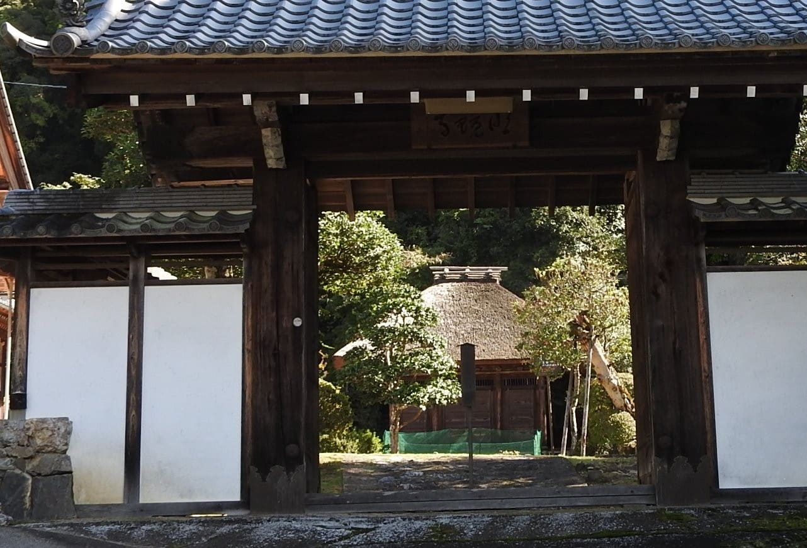

令和3年 明鏡寺年間行事
| 日にち | 予定 |
|---|---|
| 1月１日～1月3日 | 年始受付 午前10時～午後3時 (4日以降は平常になります) |
| 1月5日(火) | 明鏡寺新年初法要 |
| 受付:午前9時半より 開始:午前10時 (懇親会はありません) |
|
| 3月17日(水)～3月23日(火) | 春彼岸 |
| 3月20日(土) | 春彼岸中日法要 午前9時 (法要中本堂開放,お焼香できます) |
| 3月21日(日) | 樹木葬春彼岸法要 |
| 4月4日(日) | 地蔵祭り 受付 午後2時 |
| 6月5日(土) | 施餓鬼会 受付 午後1時半 |
| 7月13日(火)～7月16日(金) | 7月お盆 |
| 8月13日(金)～8月16日(月) | 8月お盆 |
| 9月20日(月)～9月26日(日) | 秋彼岸 |
| 9月23日(木) | 秋彼岸中日法要 午前9時 (法要中本堂開放、お焼香できます) |
| 9月26日(日) | 秋樹木葬合同秋彼岸会法要 |
| 座禅会・写経会は状況をみて 判断させていただきます。 |
|
| 年末にお焚き上げ供養を 執り行います |

行事等の予定が変更される事もありますので、お寺に問い合わせ下さい。
＊ご詠歌・詠踊等の部員を募集しております。お気軽にご連絡下さい。